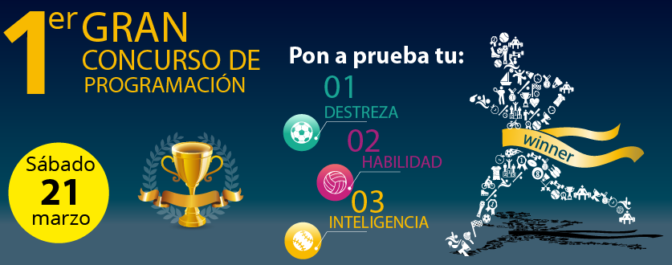

<link href="css/style.css" rel="stylesheet" type="text/css">
<link href="css/media-queries.css" rel="stylesheet" type="text/css">
		<article class="post clearfix">
			<header>
				<h1 class="post-title"><a href="#">Objetivo del concurso</a></h1>
				<p class="post-meta"><time class="post-date" datetime="2015-20-08" pubdate>Ago 20, 2015</time>
				<em>in</em> <a href="#">Category</a></p>
			</header>
			<figure class="post-image"> 
				 
			</figure>
	
        
  
			<div class="three-columns">				
			<p>
Tlaxiaco Oaxaca; 27 mayo de 2015.- En el marco del Cogreso Académico de Innovación y Emprendedurismo se llevó a cabo el Primer Congreso Nacional de Sistemas y Computación en las instalaciones del Instituto Tecnológico de Tlaxiaco.

Con el objetivo de promover en los jóvenes la participación y competición en un lenguaje de programación para que a través del conocimiento generados en las aulas puedan responder a las necesidades de la sociedad en el cual estamos inmersos y bajo el esquema de trabajo a nivel institucional se platee en el estado un esquema de mejora en el área de Sistemas Computacionales  de la Licenciatura en Informática, de la Ingeniería en Tecnologías de la Información y la Comunicación como una proyección hacia el futuro para poder competir a nivel nacional e internacional en cualquier espacio generado para los concursos de programación.

En esta actividad el martes 26 de mayo se realizó el Primer Concurso de Programación del Tecnológico Nacional de México en el estado de Oaxaca  con la participación de siete Institutos Tecnológicos: Oaxaca, Teposcolula, Salina Cruz, Pochutla, Pinotepa, Comitancillo y Tlaxiaco, obteniendo el primer lugar estudiantes del Instituto Tecnológico de Oaxaca, el Tecnológico de Tlaxiaco ocupa el segundo lugar y el tercero fué para Comitancillo.
			</div>

			<h3>Video</h3>
			<div class="video">
				<video id="miVideo" width="100%" controls>
              <source src="video/bunny.webm" type="video/ogv">
              <source src="video/bunny.webm" type="video/mp4">
              <source src="video/bunny.webm" type="video/webm">
              <object data="video/bunny.webm" width="320" height="240">
                  <embed width="320" height="240" src="video/lego.swf">
              </object>
          </video>
      
          <br>
      
          <button onclick="document.getElementById('miVideo').play()">Play</button>
          <button onclick="document.getElementById('miVideo').pause()">Pause</button>
          <button onclick="document.getElementById('miVideo').volume += 0.1">Vol+ </button>
          <button onclick="document.getElementById('miVideo').volume -= 0.1">Vol- </button>
          <button onclick="document.getElementById('miVideo').muted = true">Mute</button>
          <button onclick="document.getElementById('miVideo').muted = false">Unmute </button>
			</div>
			<!-- /.video -->

		</article>
		